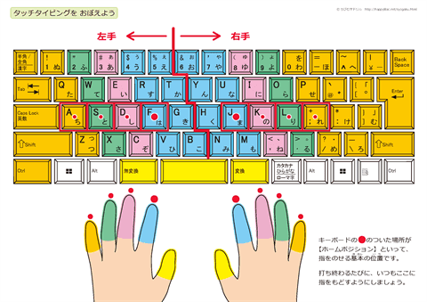

デバイスの役割を正しく選ぶ
カテゴリー
スマホ / iPad
PC
目的
コンテンツの消費
価値の生産
主な行為
閲覧・電話・チャット
分析・執筆・創造
操作
タップ、スワイプ、フリック、ピンチ
キーボード・マウス
重要なシチュエーション
日常生活に欠かせないもの
仕事の作業に欠かせないもの
理工学部生・エンジニアへ
レポート作成やプログラミングにおいて、タイピングは
「思考をコードに変換する速度」
そのものです。これがエンジニアとしての基礎スキルであることを理解してください。
目的に応じて道具を使い分ける。
「生産」の主役は常にキーボード。
タッチタイピングの必要性
現状と背景
スマホの普及によりキーボードを操作しない層が増加し、
スキル保持者は減少傾向
にあります。
一方で、実社会では
資料作成やメール対応、データの管理
など、PC操作は避けて通れない必須スキルです。
なぜ今、重要なのか
求められるのは
PCでの生産性
。タイピングの遅さは、仕事の作業の遅れに直結します。
タイピング ＝ 仕事を支える「基礎学力」
タイピング習得による4つのメリット
圧倒的なスピード
作業効率が向上
思考を止めない
画面に集中し、アウトプットを最大化
疲れにくい身体
正しい姿勢と視線で負担を軽減
PCの習熟度
PC操作の理解度に差が出ます
スマホは使えて当たり前。社会では
「正確かつ迅速なPC操作」
が評価される。
練習の進め方：ホームポジション
ホームポジションの重要性
【ホームポジション】
とは、タイピングを開始する際の基本位置です。
目印：
FとJにある突起を人差し指で探す
基本：
打ち終わるたびに、指をここに戻す
効果：
手元を見ずに正確に打つための条件
左右の分担と指の役割
中央を境に
左手と右手の担当エリア
が決まっています。
全ての指を適切に動員することで、最小限の動きで高速入力が可能になります。手元を見ない「脱・自己流」が上達の鍵です。

「手元を見ない」ための第一歩は、
常に基本の位置に指を戻す
ことです。